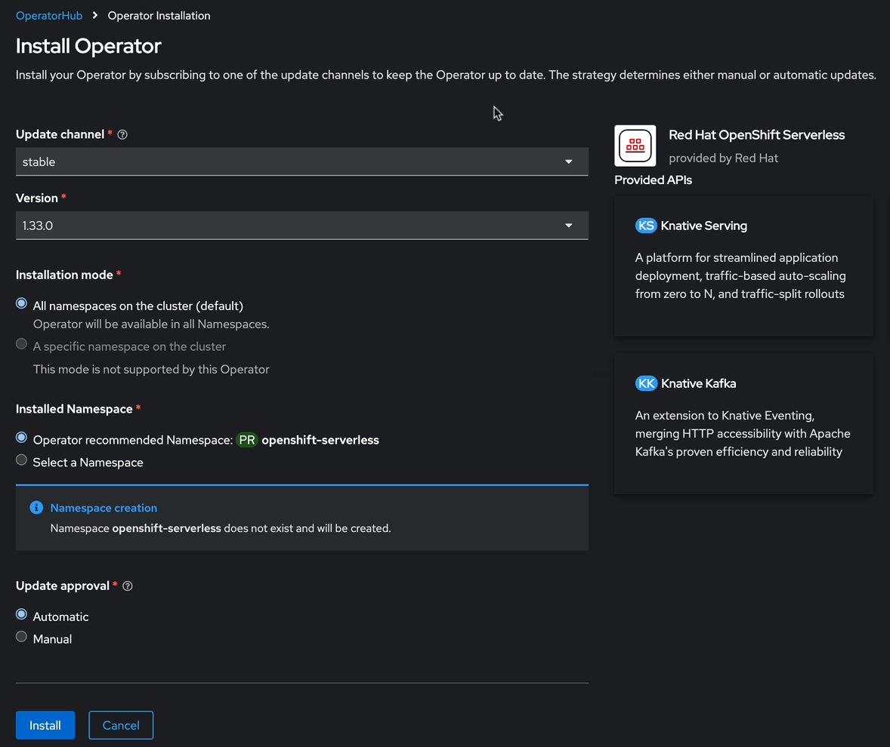
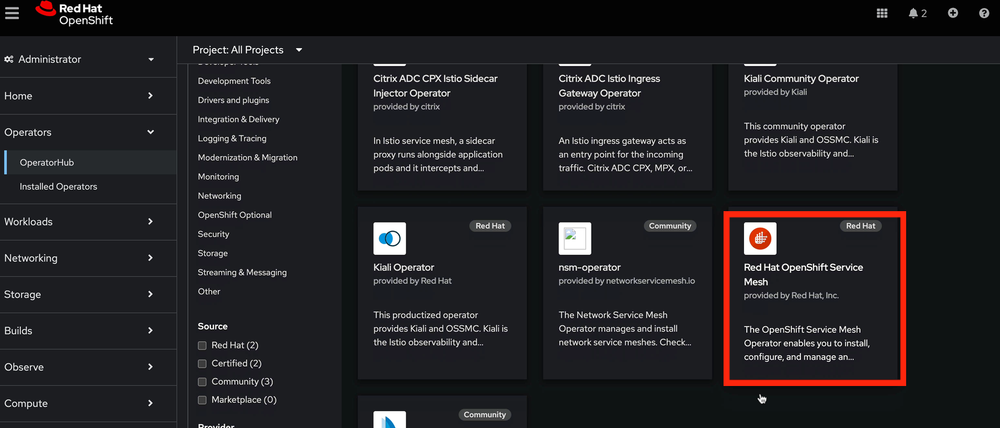
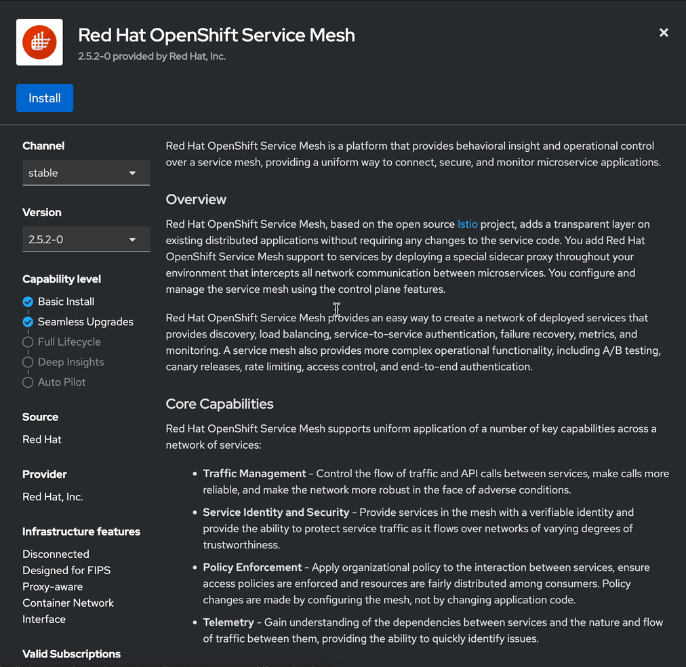
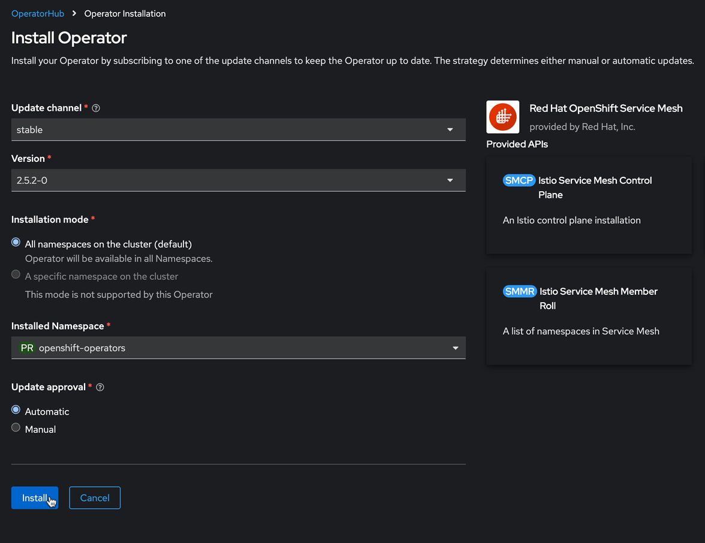
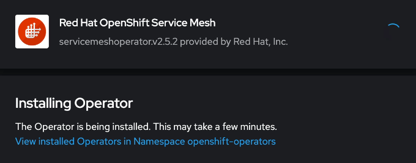
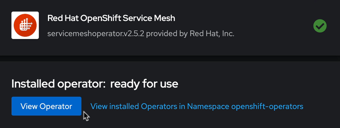
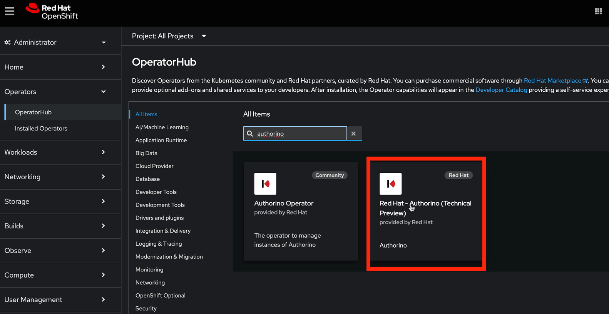
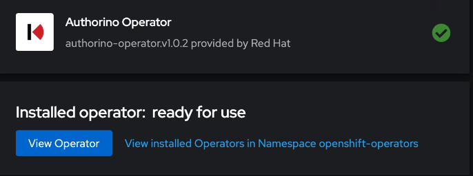

Installing Red Hat OpenShift AI Using the Web Console
Red Hat OpenShift AI is available as an operator via the OpenShift Operator Hub. You will install the Red Hat OpenShift AI operator and dependencies using the OpenShift web console in this section.
Lab: Installation of Red Hat OpenShift AI
| The installation requires a user with the cluster-admin role |
This exercise uses the Red Hat Demo Platform; specifically the OpenShift Container Cluster Platform Resource. If you haven’t already you’ll need to launch the lab environment before continuing.
-
Login to the Red Hat OpenShift using a user which has the cluster-admin role assigned.
-
It’s sufficient to install all prerequisite operators with default settings, no additional configuration is necessary.
-
Navigate to Operators → OperatorHub and search for each of the following Operators individually. Click on the button or tile for each. In the pop up window that opens, ensure you select the latest version in the stable channel and click on Install to open the operator’s installation view. For this lab you can skip the installation of the optional operators.
[*] You do not have to wait for the previous Operator to complete before installing the next. For this lab you can skip the installation of the optional operators as there is no accelerator required.
-
Red Hat OpenShift Serverless
-
Red Hat OpenShift Service Mesh
-
Red Hat Authorino technical preview
-
GPU Support
-
Node Feature Discovery Operator (optional)
-
NVIDIA GPU Operator (optional)
-
This section will discuss the process for installing the dependent operators using the OpenShift Web Console.
Installation of Red Hat OpenShift Serverless Dependencies
The following section discusses installing the Red Hat OpenShift Serverless operator.
Lab: Installation of the Red Hat OpenShift Serverless operator
-
Login to Red Hat OpenShift using a user which has the cluster-admin role assigned.
-
Navigate to Operators → OperatorHub and search for Red Hat OpenShift Serverless

-
Click on the Red Hat OpenShift Serverless operator. In the pop up window, select the stable channel and the most recent version of the serverless operator. Click on Install to open the operator’s installation view.

-
In the
Install Operatorpage, select the default values for all the fields and click Install. -
A window showing the installation progress will pop up.

-
When the installation finishes the operator is ready to be used by Red Hat OpenShift AI.

Red Hat OpenShift Serverless is now successfully installed.
Installation of Red Hat OpenShift Service Mesh Dependencies
The following section discusses installing the Red Hat OpenShift Service Mesh operator.
Lab: Installation of the Red Hat OpenShift Service Mesh operator
-
Login to Red Hat OpenShift using a user which has the cluster-admin role assigned.
-
Navigate to Operators → OperatorHub and search for Red Hat OpenShift Service Mesh
 -
Click on the Red Hat OpenShift Service Mesh operator. In the pop up window, select the stable channel and the most recent V2 version of the server mesh operator. Click on Install to open the operator’s installation view.
 -
In the
Install Operatorpage, select the default values for all the fields and click Install. -
A window showing the installation progress will pop up.
 -
When the installation finishes the operator is ready to be used by Red Hat OpenShift AI.

Red Hat OpenShift Service Mesh is now successfully installed.
Installation of Red Hat Authorino Dependencies
Lab: Installation of the Red Hat Authorino operator
The following section discusses installing the Red Hat - Authorino operator.
-
Login to Red Hat OpenShift using a user which has the cluster-admin role assigned.
-
Navigate to Operators → OperatorHub and search for Red Hat Authorino
 -
Click on the Red Hat Authorino operator. In the pop up window, select the tech-preview-v1 channel and the most recent version of the serverless operator. Click on Install to open the operator’s installation view.

-
In the
Install Operatorpage, select the default values for all the fields and click Install.
-
A window showing the installation progress will pop up.

-
When the installation finishes the operator is ready to be used by Red Hat OpenShift AI.

Red Hat Authorino is now successfully installed.
| Installing these Operators prior to the installation of the OpenShift AI Operator in my experience has made a difference in OpenShift AI acknowledging the availability of these components and adjusting the initial configuration to shift management of these components to OpenShift AI. |
-
Navigate to Operators → OperatorHub and search for OpenShift AI.
-
Click on the
Red Hat OpenShift AIoperator. In the pop up window that opens, ensure you select the latest version in the stable channel. Any version greater than 2.10 and click on Install to open the operator’s installation view. -
In the
Install Operatorpage, leave all of the options as default and click on the Install button to start the installation. -
The operator Installation progress window will pop up. The installation may take a couple of minutes.
| Do not proceed with the installation past this point. In order to access the LLM remotely; you will need to make some modifications to the Data Science Cluster YAML file prior to completing the installation of Red Hat OpenShift AI. |